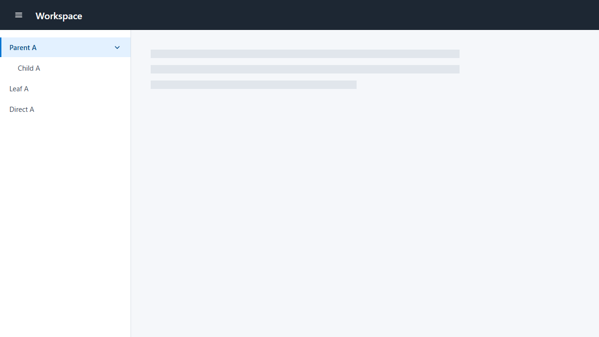
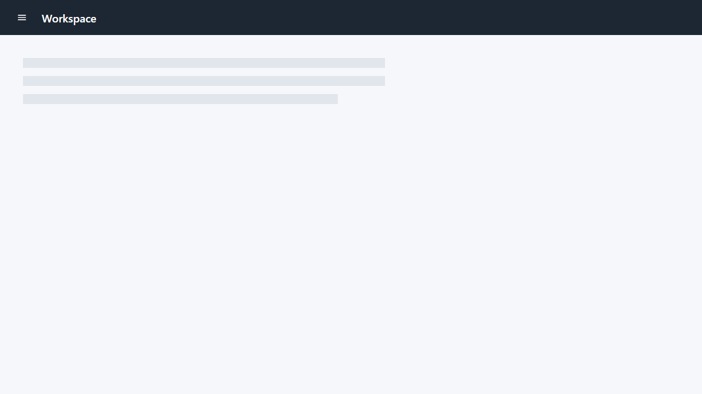
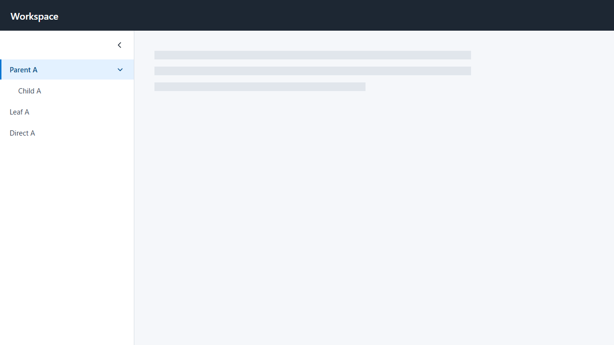
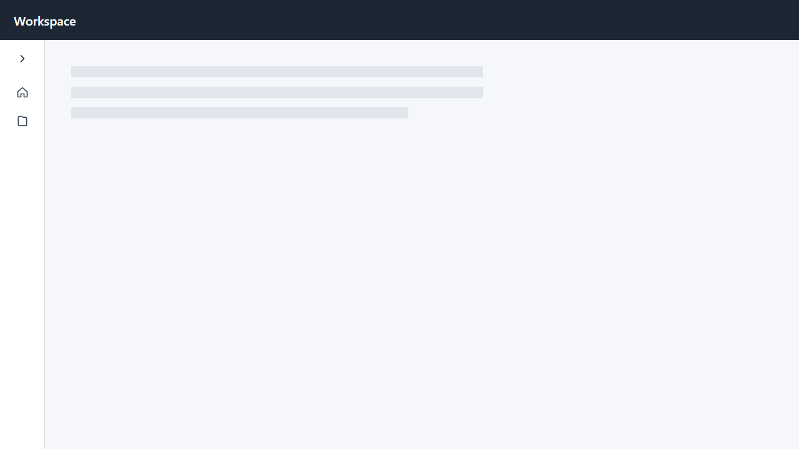

Header–Drawer correction review
Compare each paired static state directly. Pattern A keeps the Header control and title in the same positions while only the Drawer disappears. Pattern B uses a left chevron to compact a left Drawer and a right chevron to expand the retained rail.




Wide and narrow captures are static comparison evidence only; they do not establish a responsive mode policy.